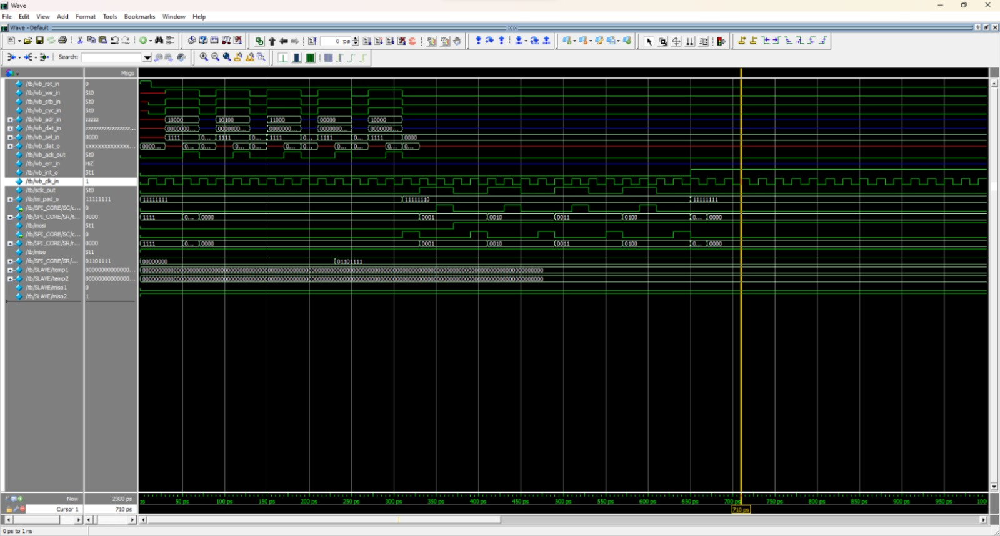
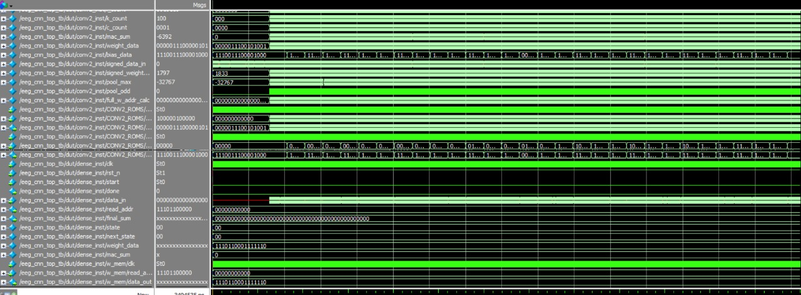
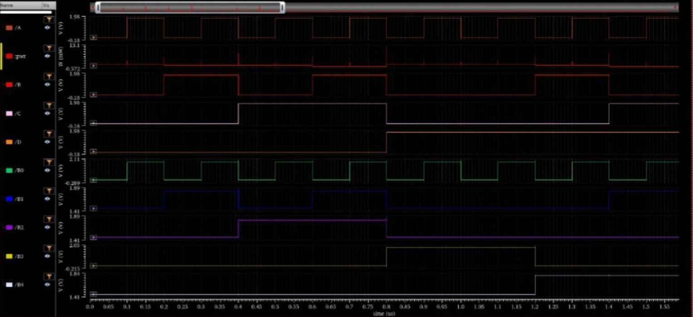

B.Tech ECE @ VIT Chennai (2026) — Aspiring VLSI engineer with interest in RTL design and verification.
Quartus · Cadence Virtuoso · Sky130 · Yosys · ModelSim
Fully synthesizable SPI Master Core in Verilog with WISHBONE-compliant host interface. Supports SPI Modes 0–3 and Microwire/Plus protocols. Verified via ModelSim and confirmed synthesis-compatible using Yosys on Sky130.

Pipelined CNN hardware accelerator in Verilog targeting Cyclone IV FPGA. Uses MAC units and FSM-based control logic. Validated against a Python reference model.

Iterative CORDIC implementation for sine/cosine computation evaluated across 8-bit, 12-bit, and 16-bit fixed-point precision. Demonstrates frequency–utilization tradeoff.
Comparative study of 4-bit Binary-to-BCD converters in CMOS and Pseudo-NMOS logic using Cadence Virtuoso. Demonstrated 5.2× power reduction with negligible timing penalty.

Designed a WISHBONE-compliant SPI Master Core in Verilog with full protocol coverage. Synthesized and verified using open-source toolchain.
View Certificate ↗RTL-to-synthesis flow using Yosys on Sky130 PDK. Gate-level simulation (GLS), synthesis-sim mismatch debugging, static timing analysis (STA) concepts.
View Certificate ↗